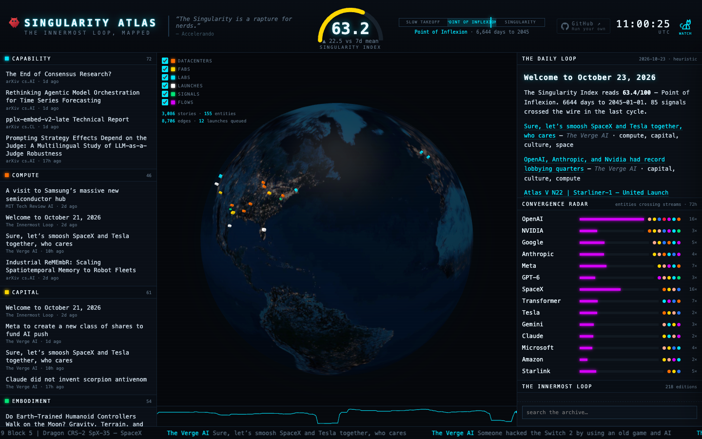

The Daily Loop
Welcome to October 23, 2026
The Singularity Index reads 63.4/100 — Point of Inflexion. 6644 days to 2045-01-01. 85 signals crossed the wire in the last cycle.
Sure, let’s smoosh SpaceX and Tesla together, who cares — *The Verge AI* · compute, capital, culture, space
OpenAI, Anthropic, and Nvidia had record lobbying quarters — *The Verge AI* · capital, culture, compute
Atlas V N22 | Starliner-1 — United Launch Alliance — *Launch Library* · embodiment, space
Falcon 9 Block 5 | Cygnus CRS-2 NG-25 — SpaceX — *Launch Library* · space
Falcon 9 Block 5 | Dragon CRS-2 SpX-35 — SpaceX — *Launch Library* · space
Falcon Heavy | Griffin Mission One — SpaceX — *Launch Library* · space
Falcon 9 Block 5 | Starlink Group 15-21 — SpaceX — *Launch Library* · space
Canva’s first AI image model plans designs before generating them — *The Verge AI* · culture, capital, space
Falcon 9 Block 5 | Starlink Group 15-16 — SpaceX — *Launch Library* · space
Falcon 9 Block 5 | Starlink Group 15-18 — SpaceX — *Launch Library* · space
*Heuristic edition — local LLM offline.*